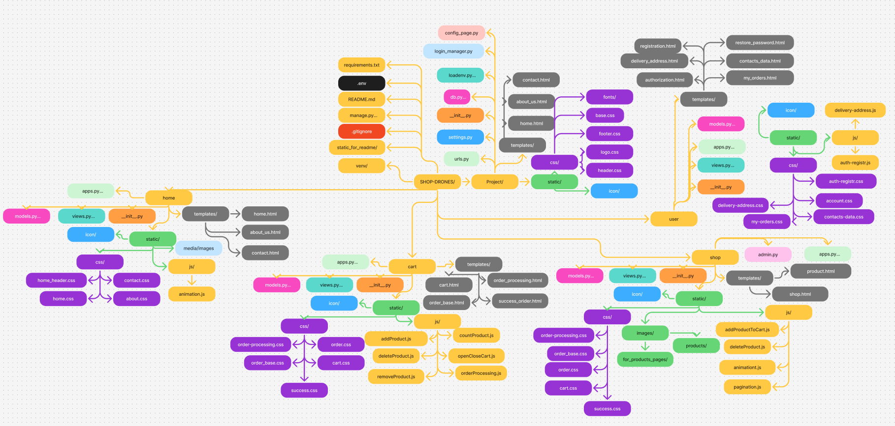
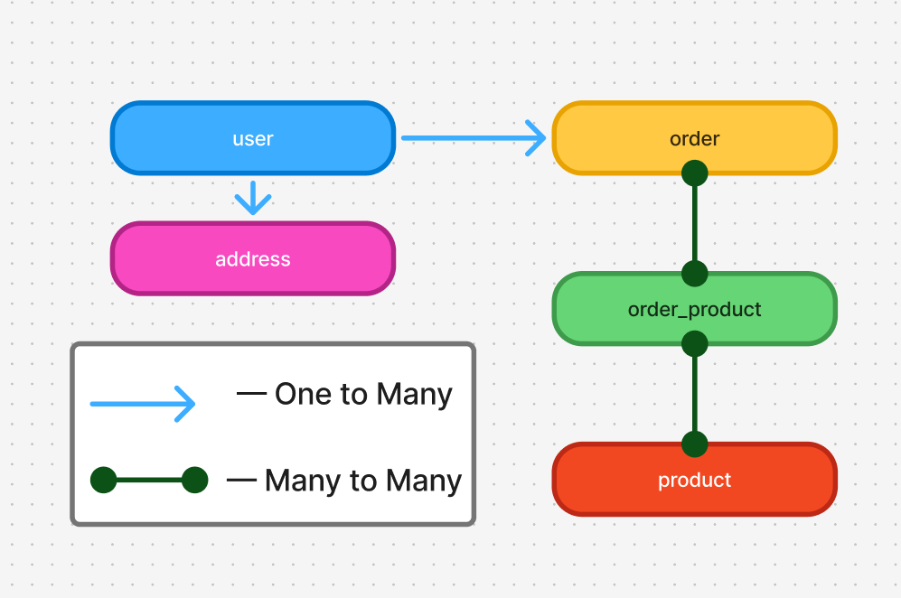

DRONES

Основною метою проєкту є вдосконалення навичок програмування на мікрофреймворці Flask та основ роботи з базами даних SQLAlchemy. DRONES — онлайн-магазин, який спеціалізується на продажі дронів та тепловізорів. В цьому проєкті реалізовані:
- Каталог продуктів з їх фільтрацією
- Авторизація, реєстрація та зміна паролю користувача/конфідеційних
- Особистий кабінет користувача/ки
- Сторінка двух найпопулярніших продуктів
- Сторінки з контактами та інформацією про компанію
- Сторінка оформлення замовлення
Зміст:
Структура
Проєкту
Проєкт складається з таких основних папок:
- Project— основна папка проєкту
- shop — застосунок магазину
- user — застосунок користувача/ки
- cart — застосунок кошика
- home — застосунок головної, контактної та інформаційної сторінок

Посилання на структуру проєкту
Бази даних
Бази даних має в собі такі моделі:
- User— дані користувачів та зв'язані з ними(адреси, замовлення)
- Product — продукти(дроні та тепловізори) та їх ціна, кількість та знижка
- Address — повна адреса користувача/ки
- Order — список продуктів у замовленні та замовник(користувач/ка)
- Order_product — таблиця-зв'язок між замовленнями та продуктами

Посилання на структуру бази даних
Команда:
Модулі проєкту
Запуск проєкту
- Склонуйте проєкт на ваш ПК:
git clone https://github.com/PolynkoPolina/Shop-Drones.git
cd Shop-Drones
- Створіть та активуйте віртуальне оточення(venv) у папці проєкта:
python -m venv venv
source venv/Scripts/activate
- Для MacOS та Linux:
python3 -m venv venv
source venv/bin/activate
- Встановіть всі потрібні модулі за допомогою файлу requirements.txt:
pip install -r requirements.txt
- Для MacOS та Linux:
pip3 install -r requirements.txt
- Створіть файл .env в кореневій папці проєкту та заповніть:
DB_INIT = flask --app Project db init
DB_MIGRATE = flask --app Project db migrate
DB_UPGRADE = flask --app Project db upgrade
- Запустість проєкт:
python manage.py
Висновки
У результаті розробки проєкту DRONES розвинулись та покращились такі навички роботи з:
- Мікрофреймворком Flask
- Допоміжними модулями до Flask
- Таблицями баз даних SQL
- Мовами програмування Python та JavaScript
- Користувацькими сессіями та cookie-файлами
- Мовами розмітки та стилів
- Css та JS анімаціями